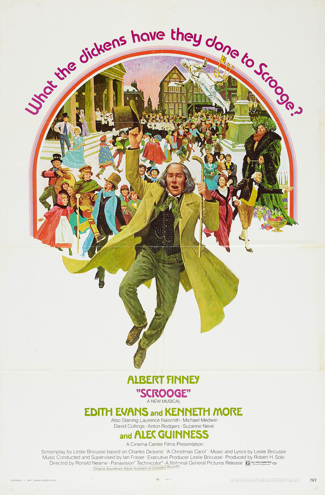

Scrooge
43rd Academy Awards
(Oscars 1971)
4 Nominations, 0 Awards
| Nominations | ||
|---|---|---|
| Category | Nominees | Result |
| Art Direction | Bob Cartwright, Pamela Cornell, and Terry Marsh | Nominated |
| Costume Design | Margaret Furse | Nominated |
| Music (Original Song Score) | Herbert W. Spencer, Ian Fraser, and Leslie Bricusse | Nominated |
| Music (Song--Original for the Picture) "Thank You Very Much" |
Leslie Bricusse | Nominated |